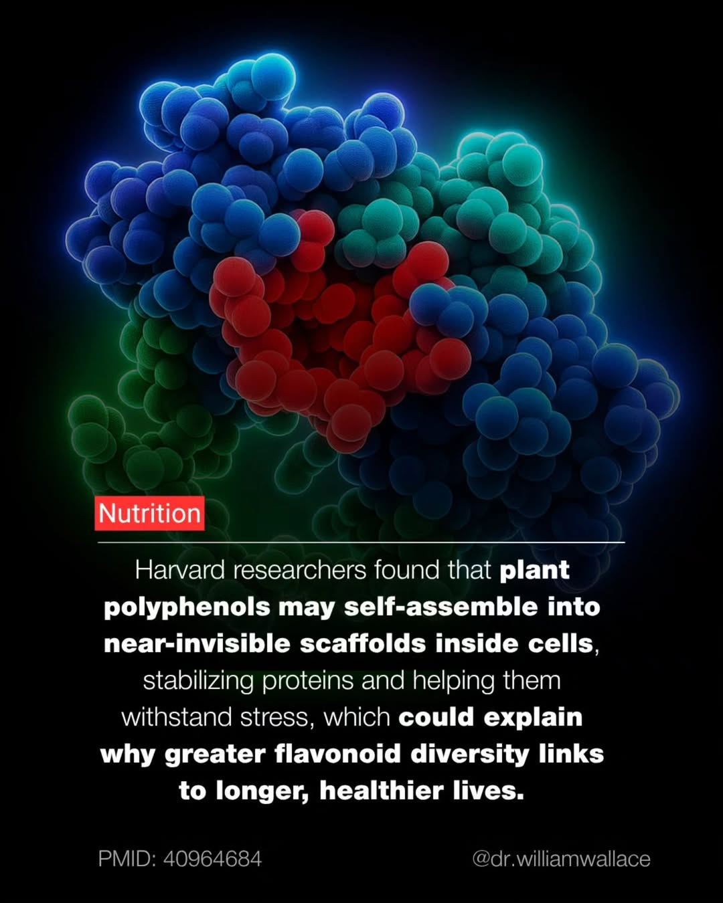

A newly discovered cellular mechanism by which polyphenols (specifically flavonoids) may exert their health benefits.
#polyphenolsHD #flavonoidsHD
Flavonoids might defend your cells by building near-invisible scaffolds inside them
Flavonoid diversity has long been linked with lower all-cause mortality, but antioxidant chemistry alone couldn’t explain why. New research from Harvard’s Wyss Institute suggests that these plant compounds may act through an entirely different mechanism; by self-assembling into supramolecular fibers that stabilize cellular proteins under stress.
In this Frontiers in Nutrition study (PMID: 40964684), molecular dynamics simulations and cell assays showed that flavonoids such as quercetin, isoquercitrin, and quercitrin stack into nanofibers that physically interact with enzymes and structural proteins, preserving their shape and activity. When human fibroblasts were exposed to ultraviolet radiation, cells pretreated with sugar-containing flavonoids maintained far greater viability and collagen-related protein expression than those treated with vitamin C, suggesting a non-antioxidant route to cellular protection.
Does this translate to humans?
✅ Possibly, but evidence is preliminary. The study used cultured cells and computational models, not dietary interventions. However, the findings align with large epidemiologic data showing that greater flavonoid diversity (6–20 % lower all-cause mortality) predicts better long-term resilience.
Practical Application:
🍇 A variety of flavonoid-rich foods like berries, tea, citrus, and cocoa may support cellular stability by providing structurally distinct molecules that assemble differently within cells.
🧪 The research points toward the idea that molecular diversity, not just antioxidant capacity, is what underpins the health benefits of polyphenols.
Limitations:
🔹 In vitro and in silico data; human tissue distribution and concentrations remain uncertain.
🔹 Flavonoid glycosides are often metabolized by gut microbes before absorption, so identical assemblies may not form in vivo.
🔹 The mechanism remains hypothesis-generating; future work must confirm structural interactions in living systems.
Flavonoids may protect cells not just by neutralizing radicals, but by building molecular scaffolds that reinforce protein networks - a hidden arc
